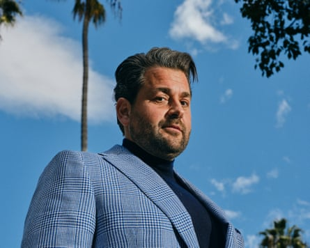

A former Sydney councillor and self-described “alpha male” has been picked by Donald Trump to be the new US ambassador to Malaysia, with the US president describing the Hooters fan as an “incredible patriot”.
In a post to X after his nomination , Nick Adams thanked the US president for the “honor of a lifetime”, saying that “In your America, all dreams come true”.
“It will be my honor to represent the United States of America in Malaysia ,” Adams, 40, wrote.
“To the esteemed Members of the Senate Foreign Relations Committee, I look forward to a confirmation process that is at the heart of the Constitution that has given me the freedom to pursue the American Dream.
“Thank you again to our Greatest President Ever!
“God Bless the United States of America!”
- Sign up for Guardian Australia’s breaking news email
In 2023 posts on X, Adams listed interests including the restaurant chain Hooters, rare steaks, “extremely” heavy weights and the Bible, and described himself as “pursued by copious amounts of women”, “wildly successful” and “extremely charismatic”.
Posting to Truth Social shortly after the announcement, Trump described Adams as an “incredible patriot and very successful entrepreneur, whose love of, and devotion to, our Great Country is an inspiration”.
Trump went on to say Adams was a “bestselling author, speaker and commentator”.
Adams, a former University of Sydney student, was cast into the US spotlight after Trump tweeted that his book, Green Card Warrior: My Quest for Legal Immigration in an Illegals’ System, was a “must read”.
Adams has since written several other books, including Retaking America: Crushing Political Correctness, Class Dismissed: Why College Isn’t the Answer, and The Most Dangerous President in History.
Australian-born Nick Adams is a conservative US political commentator.Photograph: The Washington Post/Getty Images
The conservative US political commentator is the founder of Foundation for Liberty and American Greatness (FLAG), which describes itself as an “non-profit organization dedicated to promoting and providing high-quality civics education that informs students and families about the greatness of America and the power of the American Dream”.
He also founded 1A Warriors, which he described as “a non-profit organization dedicated to securing, protecting, and preserving our beautiful and exceptional First Amendment”.
Adams, who became a US citizen in 2021, was threatened with suspension from the Liberal party in Australia after an interaction with a journalist in 2009, but he later reportedly said he had quit the party prior.
The then councillor was filmed verbally abusing the former Channel 10 journalist Brett Mason in 2009 after media reporting that accused Adams of missing council meetings.
A 2009 statement from the NSW Liberal party state director Mark Neeham, in the local publication City Hub , said Adams’ actions in abusing the journalist had fallen “well below the standard expected of Liberal Party-endorsed councillors”.
In 2005 the former deputy mayor on Sydney’s Ashfield council proposed an eradication of the area’s pigeons to prevent the spread of bird flu.
Posting to his Substack after the nomination, Adams reflected on his early life diagnosis with stage four cancer, describing how “many thought that I would never live into adulthood at all”.
In the post, which is almost 900 words long, Adams also addressed Trump directly, writing: “You are not only my favorite President, you are my favorite person.”